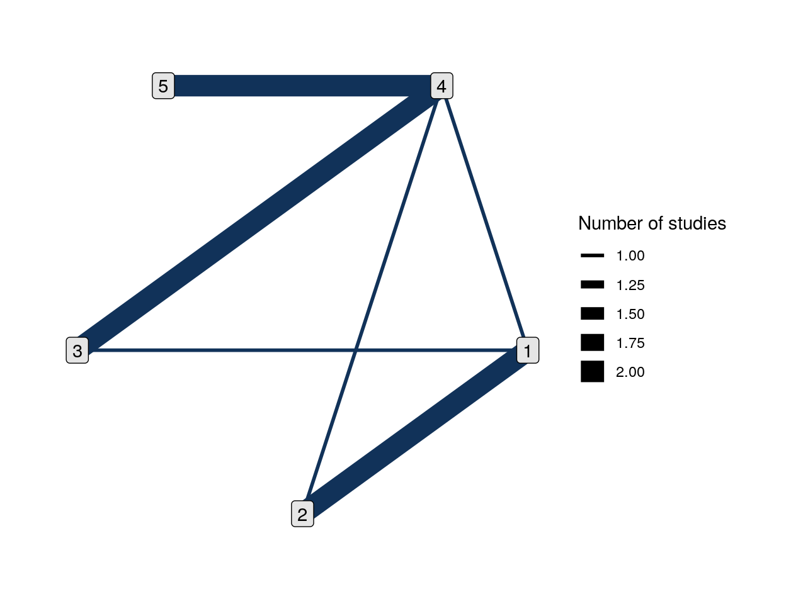
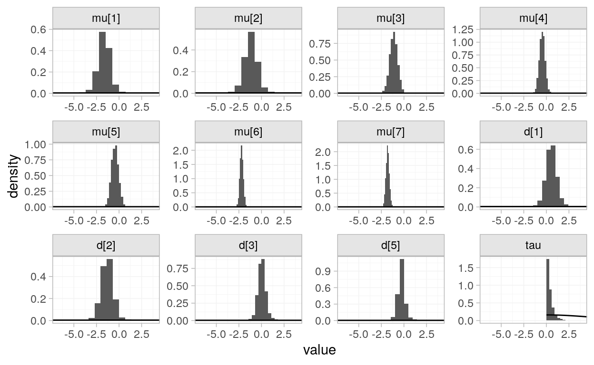

Work in progress.
# packages used in this blogpost
# general purpose
library(tidyverse)
library(kableExtra) # tables
library(skimr) # summary
library(patchwork) # vis + vis
# toolchain walkthrough
library(multinma) # network meta-analysis
library(nmathresh) # threshold analysis
library(metafor) # for (non network) meta-analysis
# special purpose
library(fdrtool) # for halfnormal distribution
library(simeta) # borrowing some handy functions
# note: should port these to my helper functions pkg
# for reproducibility
set.seed(40)Network meta-analysis is a statistical method for aggregating multiple pairwise comparisons on a response of interest. For example, perhaps three studies propose different treatments for a particular medical condition, network meta-analysis enables us to indirectly compare the treatments’ effect. Network meta-analysis is a technique for identifying which treatments are more effective than others, rather than whether a treatment is effective (Harrer et al. 2019).
There are several vignettes provided by the package multinma:: (Phillippo et al. 2020), prompting many questions. What different techniques do the vignettes demonstrate? How to perform an nma? And what is the underlying theory?
However, as this is a first deep dive into network meta-analysis, I will restrict myself to the goals:
In order to interpret the results produced by the algorithms provided by the packages investigated in this post, I need to ensure I have the conceptual understanding of the computational output. In particular, multinma:: uses a Bayesian network meta-analysis approach, so I need to understand the structure of the model before I interpret my results.
Meta-analysis is a ultimately a form of regression, finding a line of best fit through the data. How this equation is solved is not the focus here, but, instead, unpacking the equational structure of a network meta-analysis, starting from linear regression.
We assume we are solving some set of equations \[ \boldsymbol Y = \boldsymbol {\beta X} + \boldsymbol\varepsilon \] where \(\varepsilon \sim N(0, \sigma^2)\), that is, we assume the following model form. \[ \boldsymbol Y \sim N(\boldsymbol{\beta X}, \sigma) \] In a random effects meta-analysis, we are interested in a specific effect \(\mu\) and the magnitude of random variation \(\gamma_k\) attributed to the \(k\)th study’s deviance from \(\mu\), as well as any number of covariates, \(\boldsymbol{\beta X}\). So that \[ y_k \sim N(\mu + \gamma_k + \beta X, \sigma)\\ \gamma_k \sim N(0, \tau^2) \] where \(\tau^2\) is the variability of the studies’ deviance from \(\mu\).
Now, in network meta-analysis we have more than one treatment. The general idea is that we combine pairwise direct comparisons to form an indirect comparison.
Starting with the simplest case of combining two pairwise comparisons, a think of this is with treatments A, B, and C (Lumley 2002). We denote \(\delta_{XY}\) as the comparison between X and Y, with a positive value of \(\delta\) indicating a higher outcome for Y than X, and a negative value of \(\delta\) indicates a lower outcome for Y than X. If we have direct comparisons \(\delta_{AC}\) and \(\delta_{CB}\), we can construct an indirect comparison of differences. \[ \delta_{AB} = \delta_{AC} + \delta_{CB} \] Continuing along with Lumley, we let \(i\) and \(j\) denote treatments compared by \(Y_{ij}\). Since \(i\) and \(j\) have average true effects \(\mu_i\) and \(\mu_j\), we have \(\delta_{ij} = \mu_i - \mu_j\). Where there was one random effect for the heterogeneity of treatment effect in a standard meta-analysis, there are now two random effects, \(\eta_{ik}\) and \(\eta_{jk}\) with variance \(\tau^2\), for the difference betwteen the average effects of treatments \(i\) and \(j\) in this study. Another random effect \(\zeta_{ij}\) is added to capture ‘the inconsistency of this pair of treatments with the rest of the evidence’. The incoherence of the network is \(\omega = \text{var}(\zeta)\). With these we have the formal model.
\[ \begin{array}{rcl} Y_{ijk} &\sim& \text{N}(\mu_i - \mu_j + \eta_{ik} + \eta_{jk} + \zeta_{ij}, \sigma^2_{ijk})\\ \eta_{ij} &\sim& N(0, \tau^2)\\ \zeta_{ij} &\sim& N(0, \omega) \end{array} \]
Now, this is for an indirect comparison between two treatments, \(i\) and \(j\). It doesn’t seem a great leap to infer that for \(n\) treatments, there would be \(n-1\) measures of difference \(\mu\), and random effects associated with each of the pairwise components \(\eta\), as will as a measure of inconsistency of this pair of treatments with \(\zeta\) with the rest of the evidence. Certainly we have that the results is interpretated as a linear combination of treatment effects(Harrer et al. 2019).
Since multinma:: provides tools for Bayesian network meta-analysis (Phillippo et al. 2020), we have the following model structure \[
\boldsymbol y_{\cdot jk} = \pi_\text{Agg}(\boldsymbol\theta_{\cdot jk}),\\
g(\boldsymbol\theta_{\cdot jk}) = \boldsymbol\mu_j + \boldsymbol\delta_{jk}
\]
where
Turning to Rethinking (McElreath 2016), we note that for parameter of interest \(\theta\) observed for data observed \(x\), we have the expected value of the posterior in terms of the likelihood and the prior, standardised by the expected value of \(P(x|\theta)\), the probability of observing the data, given a value for the parameter \(\theta\) \[ P(\theta) = E[P(x|\theta)] = \int P(x|\theta)P(\theta)dp \]
Now, for an example of a dataset that has network with at least three nodes.
vignette("example_parkinsons", "multinma")Find out how many nodes are in this network.
parkinsons %>%
# extract treatment variable
pull(trtn) %>%
# count distinct treatment types
n_distinct()
[1] 5This vignette uses the parkinsons dataset.
# take a look at the data
parkinsons %>% head()
studyn trtn y se n diff se_diff
1 1 1 -1.22 0.504 54 NA 0.504
2 1 3 -1.53 0.439 95 -0.31 0.668
3 2 1 -0.70 0.282 172 NA 0.282
4 2 2 -2.40 0.258 173 -1.70 0.382
5 3 1 -0.30 0.505 76 NA 0.505
6 3 2 -2.60 0.510 71 -2.30 0.718
# summary of the variables provided by these data
parkinsons %>% str()
'data.frame': 15 obs. of 7 variables:
$ studyn : int 1 1 2 2 3 3 3 4 4 5 ...
$ trtn : num 1 3 1 2 1 2 4 3 4 3 ...
$ y : num -1.22 -1.53 -0.7 -2.4 -0.3 -2.6 -1.2 -0.24 -0.59 -0.73 ...
$ se : num 0.504 0.439 0.282 0.258 0.505 0.51 0.478 0.265 0.354 0.335 ...
$ n : num 54 95 172 173 76 71 81 128 72 80 ...
$ diff : num NA -0.31 NA -1.7 NA -2.3 -0.9 NA -0.35 NA ...
$ se_diff: num 0.504 0.668 0.282 0.382 0.505 0.718 0.695 0.265 0.442 0.335 ...From ?parkinsons documentation, we know we have a study variable studyn, a treatment variable trtn, a measure of effect y, and standard error of the effect, se, sample size n.
There is also the mean difference of the treatment in the reference arm diff, and the standard error of the mean difference se_diff. This provides three ways of meta-analysing the data.
This dataset may be analysed using either an arm-based likelihood using y and se, or a contrast-based likelihood using diff and se_diff (or a combination of the two across different studies) (Phillippo et al. 2020).
We have seven studies’ results for pairwise comparisons of five treatments of interest for our continuous response measure,
the mean off-time reduction in patients given dopamine agonists as adjunct therapy in Parkinson’s disease from 7 trials comparing four active drugs and placebo (
?parkinsonsdocumentation; Phillippo et al. 2020; data source Dias et al. 2011).
Since our response variable in this case is continuous, the link function \(g(\theta_{\cdot jk})\) is simply the identity. So we have \[ g(\theta_{\cdot jk}) = \mu_j + \delta_{jk} = \theta_{\cdot jk} \] with the response expected to follow a normally distributed outcome, then \[ y_{\cdot jk} \sim \text{normal}(\mu_j + \delta_{jk}, \sigma^2)\\ \mu_j \sim \text{normal}(0, 100^2)\\ \delta_{jk} \sim \text{normal}(0, \tau^2)\\ \tau \sim \text{halfnormal}(5) \]
For an arm-based network meta-analysis, begin by converting the raw data to a network object.
arm_net <-
set_agd_arm(
parkinsons,
study = studyn,
trt = trtn,
y = y,
se = se,
sample_size = n
)
# this is a network object
class(arm_net)
[1] "nma_data"
# take a look
arm_net
A network with 7 AgD studies (arm-based).
--------------------------------------------- AgD studies (arm-based) ----
Study Treatments
1 2: 1 | 3
2 2: 1 | 2
3 3: 1 | 2 | 4
4 2: 3 | 4
5 2: 3 | 4
6 2: 4 | 5
7 2: 4 | 5
Outcome type: continuous
--------------------------------------------------------------------------
Total number of treatments: 5
Total number of studies: 7
Reference treatment is: 4
Network is connectedNow that we have a network object, we can inspect the relationships between the treatments where studies provide comparisons. Here we see there are pairwise comparisons between many of the treatments. In particular, treatment 3 and treatment 5 have not been compared directly, nor have treatment 2 and treatment 3.
plot(arm_net)
The number of studies measure must be relational. But what does it mean, inspect the documentation.
We fit a random effects model with assumptions \(\textrm{normal}(0, 100^2)\) prior distributions for the treatment effect \(d_k\) and study-specific intercepts \(\mu_j\), we use \(\textrm{halfnormal(5^2)}\). The ranges of these prior distributions can be examined.
summary(normal(scale = 100))
A Normal prior distribution: location = 0, scale = 100.
50% of the prior density lies between -67.45 and 67.45.
95% of the prior density lies between -196 and 196.
summary(half_normal(scale = 5))
A half-Normal prior distribution: location = 0, scale = 5.
50% of the prior density lies between 0 and 3.37.
95% of the prior density lies between 0 and 9.8.
# now to fit the racchendom-effects model
arm_fit_RE <- nma(arm_net,
seed = 379394727,
trt_effects = "random",
prior_intercept = normal(scale = 100),
prior_trt = normal(scale = 100),
prior_het = half_normal(scale = 5),
adapt_delta = 0.99)
SAMPLING FOR MODEL 'normal' NOW (CHAIN 1).
Chain 1:
Chain 1: Gradient evaluation took 3.9e-05 seconds
Chain 1: 1000 transitions using 10 leapfrog steps per transition would take 0.39 seconds.
Chain 1: Adjust your expectations accordingly!
Chain 1:
Chain 1:
Chain 1: Iteration: 1 / 2000 [ 0%] (Warmup)
Chain 1: Iteration: 200 / 2000 [ 10%] (Warmup)
Chain 1: Iteration: 400 / 2000 [ 20%] (Warmup)
Chain 1: Iteration: 600 / 2000 [ 30%] (Warmup)
Chain 1: Iteration: 800 / 2000 [ 40%] (Warmup)
Chain 1: Iteration: 1000 / 2000 [ 50%] (Warmup)
Chain 1: Iteration: 1001 / 2000 [ 50%] (Sampling)
Chain 1: Iteration: 1200 / 2000 [ 60%] (Sampling)
Chain 1: Iteration: 1400 / 2000 [ 70%] (Sampling)
Chain 1: Iteration: 1600 / 2000 [ 80%] (Sampling)
Chain 1: Iteration: 1800 / 2000 [ 90%] (Sampling)
Chain 1: Iteration: 2000 / 2000 [100%] (Sampling)
Chain 1:
Chain 1: Elapsed Time: 0.756232 seconds (Warm-up)
Chain 1: 0.788362 seconds (Sampling)
Chain 1: 1.54459 seconds (Total)
Chain 1:
SAMPLING FOR MODEL 'normal' NOW (CHAIN 2).
Chain 2:
Chain 2: Gradient evaluation took 1.5e-05 seconds
Chain 2: 1000 transitions using 10 leapfrog steps per transition would take 0.15 seconds.
Chain 2: Adjust your expectations accordingly!
Chain 2:
Chain 2:
Chain 2: Iteration: 1 / 2000 [ 0%] (Warmup)
Chain 2: Iteration: 200 / 2000 [ 10%] (Warmup)
Chain 2: Iteration: 400 / 2000 [ 20%] (Warmup)
Chain 2: Iteration: 600 / 2000 [ 30%] (Warmup)
Chain 2: Iteration: 800 / 2000 [ 40%] (Warmup)
Chain 2: Iteration: 1000 / 2000 [ 50%] (Warmup)
Chain 2: Iteration: 1001 / 2000 [ 50%] (Sampling)
Chain 2: Iteration: 1200 / 2000 [ 60%] (Sampling)
Chain 2: Iteration: 1400 / 2000 [ 70%] (Sampling)
Chain 2: Iteration: 1600 / 2000 [ 80%] (Sampling)
Chain 2: Iteration: 1800 / 2000 [ 90%] (Sampling)
Chain 2: Iteration: 2000 / 2000 [100%] (Sampling)
Chain 2:
Chain 2: Elapsed Time: 0.767323 seconds (Warm-up)
Chain 2: 0.525132 seconds (Sampling)
Chain 2: 1.29245 seconds (Total)
Chain 2:
SAMPLING FOR MODEL 'normal' NOW (CHAIN 3).
Chain 3:
Chain 3: Gradient evaluation took 1.3e-05 seconds
Chain 3: 1000 transitions using 10 leapfrog steps per transition would take 0.13 seconds.
Chain 3: Adjust your expectations accordingly!
Chain 3:
Chain 3:
Chain 3: Iteration: 1 / 2000 [ 0%] (Warmup)
Chain 3: Iteration: 200 / 2000 [ 10%] (Warmup)
Chain 3: Iteration: 400 / 2000 [ 20%] (Warmup)
Chain 3: Iteration: 600 / 2000 [ 30%] (Warmup)
Chain 3: Iteration: 800 / 2000 [ 40%] (Warmup)
Chain 3: Iteration: 1000 / 2000 [ 50%] (Warmup)
Chain 3: Iteration: 1001 / 2000 [ 50%] (Sampling)
Chain 3: Iteration: 1200 / 2000 [ 60%] (Sampling)
Chain 3: Iteration: 1400 / 2000 [ 70%] (Sampling)
Chain 3: Iteration: 1600 / 2000 [ 80%] (Sampling)
Chain 3: Iteration: 1800 / 2000 [ 90%] (Sampling)
Chain 3: Iteration: 2000 / 2000 [100%] (Sampling)
Chain 3:
Chain 3: Elapsed Time: 0.714943 seconds (Warm-up)
Chain 3: 0.629105 seconds (Sampling)
Chain 3: 1.34405 seconds (Total)
Chain 3:
SAMPLING FOR MODEL 'normal' NOW (CHAIN 4).
Chain 4:
Chain 4: Gradient evaluation took 4.5e-05 seconds
Chain 4: 1000 transitions using 10 leapfrog steps per transition would take 0.45 seconds.
Chain 4: Adjust your expectations accordingly!
Chain 4:
Chain 4:
Chain 4: Iteration: 1 / 2000 [ 0%] (Warmup)
Chain 4: Iteration: 200 / 2000 [ 10%] (Warmup)
Chain 4: Iteration: 400 / 2000 [ 20%] (Warmup)
Chain 4: Iteration: 600 / 2000 [ 30%] (Warmup)
Chain 4: Iteration: 800 / 2000 [ 40%] (Warmup)
Chain 4: Iteration: 1000 / 2000 [ 50%] (Warmup)
Chain 4: Iteration: 1001 / 2000 [ 50%] (Sampling)
Chain 4: Iteration: 1200 / 2000 [ 60%] (Sampling)
Chain 4: Iteration: 1400 / 2000 [ 70%] (Sampling)
Chain 4: Iteration: 1600 / 2000 [ 80%] (Sampling)
Chain 4: Iteration: 1800 / 2000 [ 90%] (Sampling)
Chain 4: Iteration: 2000 / 2000 [100%] (Sampling)
Chain 4:
Chain 4: Elapsed Time: 0.923916 seconds (Warm-up)
Chain 4: 1.16821 seconds (Sampling)
Chain 4: 2.09213 seconds (Total)
Chain 4: A warning is generated, prompting us to
pairs(arm_fit_RE, pars = c("mu[4]", "d[3]", "delta[4: 3]", "tau"))
Dias, Sofia, Nicky J Welton, Alex J Sutton, and AE Ades. 2011. “NICE Dsu Technical Support Document 2: A Generalised Linear Modelling Framework for Pairwise and Network Meta-Analysis of Randomised Controlled Trials.”
Harrer, Mathias, Prof Dr Pim Cuijpers², Prof Dr Toshi A. Furukawa³, and Assoc Prof Dr David D. Ebert². 2019. Doing Meta-Analysis in R. https://bookdown.org/MathiasHarrer/Doing_Meta_Analysis_in_R/.
Lumley, Thomas. 2002. “Network Meta-Analysis for Indirect Treatment Comparisons.” Statistics in Medicine 21 (16): 2313–24. https://doi.org/10.1002/sim.1201.
McElreath, Richard. 2016. Statistical Rethinking: A Bayesian Course with Examples in R and Stan. CRC Press. http://xcelab.net/rm/statistical-rethinking/.
Phillippo, David M., Sofia Dias, A. E. Ades, Mark Belger, Alan Brnabic, Alexander Schacht, Daniel Saure, Zbigniew Kadziola, and Nicky J. Welton. 2020. “Multilevel Network Meta-Regression for Population-Adjusted Treatment Comparisons.” Journal of the Royal Statistical Society: Series A (Statistics in Society) 183 (3): 1189–1210. https://doi.org/10.1111/rssa.12579.